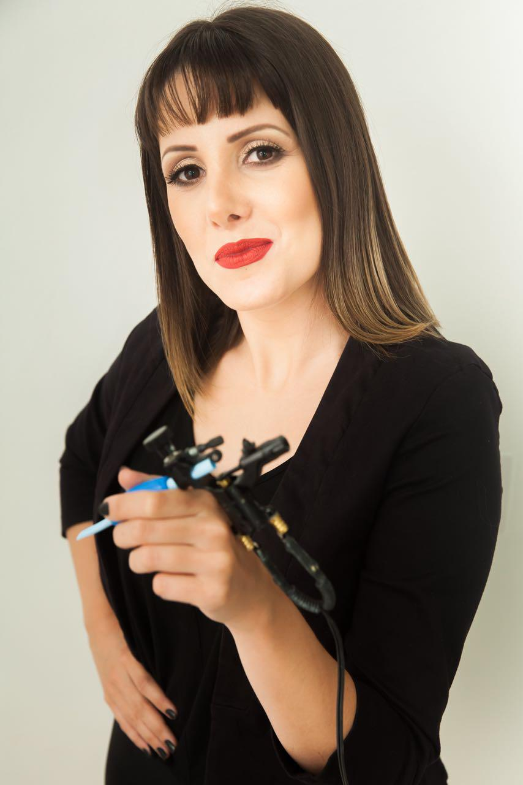

QUEM SOU
Neta de artesãos. Filha de cabeleireira. A arte sempre esteve presente em sua infância e formação de personalidade. Começou sua carreira profissional como Administradora, no qual é formada. No entanto, foi buscar algo que a completasse verdadeiramente. Iniciou assim, sua carreira como cabeleireira. Mas mesmo em meio a este universo, algo faltava. Assim começou a carreira de Micropigmentadora e Tatuadora Estética.
A busca incessante por conhecimento a tornou uma das referências no país em Camuflagem de Estrias e Micro pigmentação. Além disso, ministra cursos em São José (SC) em seu estúdio e viaja o Brasil levando seu conhecimento e formando profissionais com diferenciais para o mercado.
